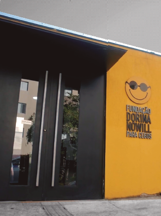
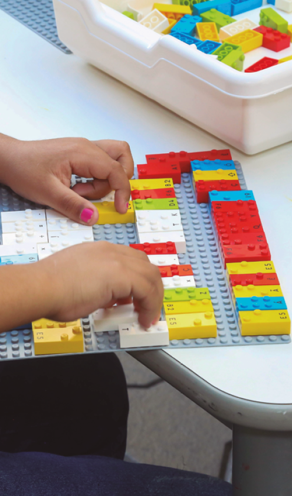
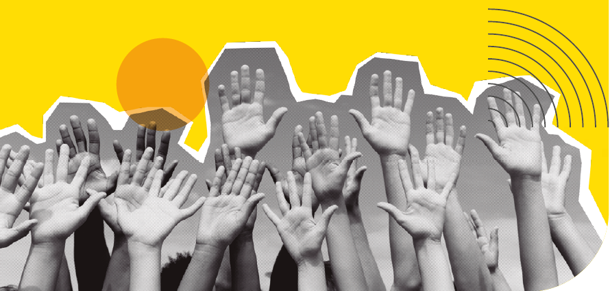
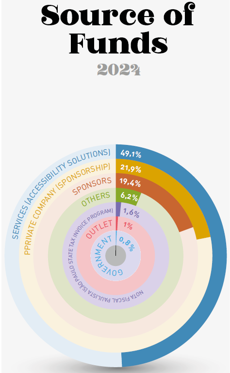
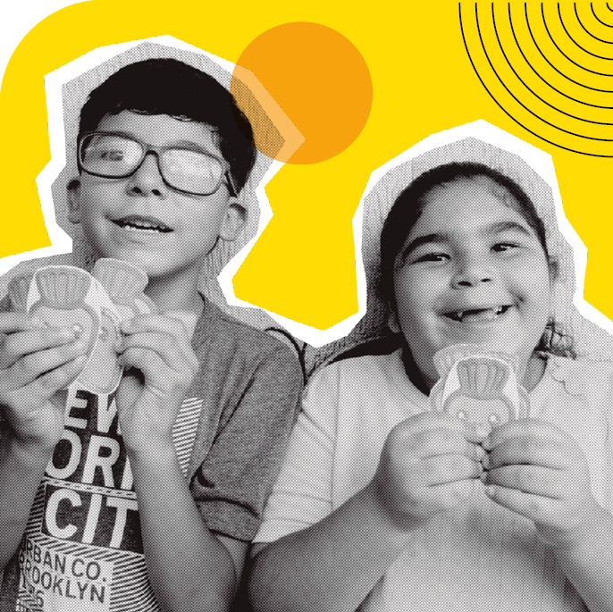

COVER
![Image: Cover. At the bottom right, the title “2024 ACTIVITY REPORT.” In the upper left corner, the logo of the Dorina Nowill Foundation for the Blind, consisting of a yellow emoji with a broad smile and round black glasses, followed by the name. In the center, a photomontage with photographs of people and objects: an elderly bald man wearing a plaid shirt, holding a long cane and smiling; a boy with short hair sitting on a pile of books, wearing sunglasses, a printed shirt and shorts, holding an open book close to his face; a girl with long blond hair wearing a cap, glasses, and a T-shirt; an open book with Braille writing on the pages; and a woman with dark hair tied in a bun, wearing a printed dress and shoes, holding a long cane in her hand. End of image.](../resources/images/image_Image12646.png)
Page 1
Page without content.
Page 2
Summary
Page 3
SUBTITLE: Photo: Dorina de Gouvêa Nowill, Institutional. END OF SUBTITLE.
Page 4

SUBTITLE: Illustration: collage with two photos of Dorina Nowill and a Braille typewriter. END OF SUBTITLE.
Page 5
1. Institutional
Page 6
Introduction

SUBTITLE: Photo: Dorina Nowill and two women. END OF SUBTITLE.
Quote: To offer a unique and special kind of care, just like we always have. End of quote.
It is a challenge to balance the values that have guided the Foundation for the Blind called Fundação Dorina Nowill para Cegos for over 70 years with the demands of an increasingly globalized and technological world. But the institution continues to overcome obstacles, achieve new goals, and expand its reach in its mission to promote autonomy and accessibility for blind and visually impaired people.
All the experience and knowledge gained from seven decades of constant service to people with disabilities has been shared with other institutions in various cities across Brazil. Even as it expands its borders and its presence abroad, the care it provides to its clients remains the same. Every person who arrives at the Foundation’s building continues to receive a unique and special kind of care, as it has always been.
By prioritizing excellence, the Foundation not only maintains its work, but continues to grow steadily. In the pages of this report, you will learn more about all the latest news and achievements of 2024. Beyond accountability, this is an expression of gratitude to all who contributed to making it happen.
Page 7
Organization
Profile
Promoting the autonomy and independence of blind and visually impaired people, while also raising awareness about inclusion and accessibility, are the goals of Fundação Dorina Nowill para Cegos.
The institution’s name comes from its founder, who lost her sight at age 17 but never gave up studying and reading. But at the time, she faced many barriers and began her fight to have more Braille books in Brazil. Thus, in 1946, she founded the Foundation for Braille Books in Brazil, with the mission of producing Braille publications – an activity that continues to this day, 78 years later.
But Ms. Dorina took her dream much further, and other missions emerged along her path, always focusing on the rehabilitation of blind and visually impaired people. Over the years, the Foundation has modernized, innovated and evolved in several areas to protect this population, both in editorial, graphic, and audiovisual solutions, as well as in rehabilitation support services.
Renowned in Brazil and around the world for its excellent work, Fundação Dorina is celebrating another year of hard work and transformative initiatives, not only for people with disabilities, but also for each and every one of us.
![image: Photograph. Two women walk on the sidewalk in front of a yellow building with the number “558” in black on the upper right side of the facade and the logo of the DORINA NOWILL FOUNDATION FOR THE BLIND. The woman on the left has long black hair, wears a blue blouse, white pants, and white sneakers, carries a backpack on her back, and holds a long cane in her hand. She is arm in arm with the woman on the right. The woman on the right has long brown hair, wears sunglasses, a gray blouse, black pants, and beige sneakers. end of image.](../resources/images/image_Image12678.png)
SUBTITLE: Photo: facade of Fundação Dorina Nowill para Cegos. END OF SUBTITLE.
Page 8
Purpose,
Values & Vision
Our PURPOSE
To promote inclusion and accessibility for people who are blind and have low vision, so that together we can transform lives and society.
Our VALUES
• Ethics are non-negotiable.
• Transparency in what we do and how we do it.
• Respect is so good that we cannot do without it.
• Diversity is a fact; inclusion is our choice.
• Perseverance in everything we do and that’s why we never give up.
• Commitment to our purpose.
• Innovation to build the future, valuing our legacy.
Our VISION
To be recognized worldwide as a benchmark in inclusive leadership, expanding, innovating, and multiplying impactful initiatives for all generations.
Page 9
Impairment
figures in Brazil
and worldwide
There are more than 253 million people with visual impairments worldwide.
Among them, 36 million people are blind and 217 million have severe vision loss, according to the World Health Organization (WHO).
According to the WHO, if there were more effective prevention and/or treatment initiatives, between 60% and 80% of blindness cases could be prevented.
SUBTITLE: Illustration: cartoon drawing of the globe with a cane for a visually impaired person and sunglasses. END OF SUBTITLE.
Complementary box:
In Brazil, data from the IBGE (Brazilian Institute of Geography and Statistics) show that there are 6.5 million people with visual impairment, of whom
528,000 are blind
6 million people have severe visual impairment (low vision).
End of complement.
Page 10
Message from
the Chairman
SUBTITLE: Photo: Francisco H. Della Manna, Chairman of the Board of Trustees (2019–2024). END OF SUBTITLE.
Francisco H. Della Manna
Chairman
The year 2024 will be remembered in my life, not only because it will be my last as president of Fundação Dorina, but also because of everything we achieved in those 365 days. Even though I know the institution and its full potential, I’m always impressed when I stop to reflect on our accomplishments and how much progress we have made year after year.
To begin with, in 2024, we had several events related to the Paralympics. I was able to accompany our athletes in Paris and also witness the incredible work of photographer and Fundação Dorina advisor, João Maia. Even though he lost his sight about 20 years ago, he shows how it’s possible to go far beyond expectations. João Maia symbolizes much of what we strive to develop every day with our clients.
SUBTITLE: Photo: Eiffel Tower decorated with the Olympic rings. END OF SUBTITLE.
Page 11
Quote: Even though I know the institution and its full potential, I’m always impressed when I stop to reflect on our accomplishments and how much progress we have made year after year. End of quote.
SUBTITLE: Photo: tablet screen showing braille letters. END OF SUBTITLE.
We also continue to expand the boundaries of Fundação Dorina. Another significant initiative of the year was the call for proposals we launched to support institutions in Rio Grande do Sul that serve blind and visually impaired people and that lost everything due to the severe floods that hit the state. We finalized the call for proposals at the end of 2024, selecting the organizations from Rio Grande do Sul that will be supported, and in 2025, we will begin working to help them resume their work.
Internally, we invested even more to provide the best to our clients. One example of this was the purchase of 50 Braille Displays, equipment that allows Braille to be read on tablets, computers, and cell phones. Another important milestone is the renovation of our headquarters, which will increase the number of people we serve.
I served two four-year terms with complete dedication. It was a period of hard work, but also of great pride in having served this institution, so important for advocating for accessibility for blind people. I wish the new president, Eduardo de Oliveira, much success, and I remain available to do whatever I can to contribute to the Foundation.
Page 12
Message from the
Superintendent
SUBTITLE: Photo: Alexandre Munck, Superintendent. END OF SUBTITLE.
Alexandre Munck
Superintendent
Inspired by the Paralympic year, Fundação Dorina achieved many victories in 2024. Month after month, our team worked with cohesion and commitment, pursuing each objective.
In sports and in life, having good partners is an important part of victory. Therefore, in 2024, we partnered with two institutions: Naurú, for Athletics, and CADEVI, for Goalball, to bring sports to the Foundation for the first time. Another new addition was Takkyu Volley, a sport that has already led to the participation of our athletes in a competition.
Successful partnerships were also established in the field of rehabilitation. We shared our resources and knowledge with the Instituto Sul-Mato-Grossense para Cegos Florivaldo Vargas (ISMAC) and Associação Catarinense para Integração do Cego (ACIC), with the goal of expanding our experience to other states in Brazil.
Planning is another important step in achieving goals. As part of our strategic plan, we invested in the Foundation’s infrastructure, expanding our space with the acquisition of a new building. The goal is to increase the number of people served by 50% by 2026.
Page 13
In 2024, we began renovations at our headquarters, creating a new auditorium and expanding the physical library, which will soon be ready to serve the public.
The Foundation also participated in several events to exchange information and experiences. We attended BETT Educar, Bienal do Livro, and the Web Summit, in addition to hosting the Daisy International Digital Book Consortium Meeting, which took place in São Paulo after almost 12 years, with the participation of more than 10 countries. The Foundation also participated in the G20 Social, as part of D20, dedicated to issues related to people with disabilities. During the event, several proposals were established, including the creation of a global plan to address the fight against hunger and poverty and promote food security for the population with disabilities.
Quote: Planning is another important step in achieving goals.” As part of our strategic planning, we invested in the Foundation’s infrastructure. End of quote.

SUBTITLE: Photo: facade of the headquarters of Fundação Dorina Nowill para Cegos. END OF SUBTITLE.
We also welcomed representatives from the LEGO Foundation of Denmark, who learned about our work and saw the LEGO® Braille Bricks project in action in Brazilian schools.
We promoted the largest campaign in our history during Brown April, Blindness Awareness Month, aiming to inform people about the importance of prevention and also to show that the Foundation is always open to anyone who needs our services.
We closed the 2024 season with record-breaking results! We reached the highest number of clients served in our history and many other impressive numbers, which you will see in this report.
We hope you continue to support us in the coming years, so that, together, we can overcome obstacles and achieve even more victories!
Page 14
SUBTITLE: Illustration: collage featuring a photo of client Alice Alencar, a photo of client Fernanda Santos, and some LEGO® Braille Bricks pieces. END OF SUBTITLE.
Page 15
2. Inclusion Support Services
Page 16
Habilitation/
Rehabilitation
Rehabilitation is where blind and visually impaired people first connect with Fundação Dorina. It is also through this service that the lives of these individuals and their families begin to transform. In 2024, a record was once again broken, with services exceeding 50,000.
It was also the first year that the number of children outnumbered the number of young people, the result of intense outreach efforts. This initiative makes a huge difference for blind or visually impaired children, as the earlier the disability is identified, the greater the benefits of rehabilitation for the child and their family.
![Photograph. People on a beach. In the center, a girl with black hair tied back in a ponytail, wearing glasses and a pink swimsuit. She is in an adapted wheelchair, consisting of three wheels and a horizontal leg support. Behind her, holding the chair, a man with short brown hair and a beard, wearing sunglasses and a pink and blue thermal shirt. On the right, another man with short brown hair and a beard wears a pink and blue thermal shirt and gray shorts. On the left, a woman with black hair tied back in a ponytail wears sunglasses, a white T-shirt with the Dorina Nowill Foundation logo, black leggings, and blue sneakers. Next to her are two women and a child.](../resources/images/image_Image12765.png)
SUBTITLE: Photo: clients using adapted equipment during a visit to Santos beach. END OF SUBTITLE.
Due to this change in client profile, new workshops were offered at the Foundation, such as art, choir, theater, and Braille for family members. Furthermore, the team continued the outdoor activity program that began in 2023 and was intensified in 2024, when, for the first time, the Foundation took a group of children to Ponta da Praia beach in Santos.
The trip was supported by the NGO Praia Acessível, which offers kayaks, bicycles, and other equipment adapted for people with disabilities. Thus, they were able to participate in various activities on the beach, such as surfing, diving, running, hiking, and many more.

SUBTITLE: Photo: client Luis Felipe’s visit to the fire department. END OF SUBTITLE.
Page 17
Much more than simple outings, these activities offer clients the opportunity to put the concepts of autonomy and mobility into practice, as well as providing an observation field for the Foundation’s professionals.
![image: Photograph. People sitting around a tennis table. In the center, a man with short brown hair wears a pink polo shirt with white stripes and holds an adapted racket, consisting of a horizontal black rectangular support. Next to the adapted racket is a table tennis ball. On the right, a woman with long red hair wears a black blouse and holds the adapted racket. On the left, two men: one has short gray hair and is sitting on the side of the tennis table; the other wears a black cap and is sitting on the side of the table at the net. In the background, a girl with her eyes closed and a man holding her hands are sitting on chairs; behind them are playground toys. end of image.](../resources/images/image_Image12781.png)
SUBTITLE: Photo: clients practicing Takkyu Volley. END OF SUBTITLE.
Two team-focused initiatives were key to improving the area’s numbers and results: a 29% reduction in technician turnover compared to the previous year achieved through hiring young talents and engaging them in the cause; and participatory management, which encourages the team to bring ideas and explore new possibilities for habilitation and rehabilitation.
Another new development in the area was the arrival of Takkyu Volley, the first sport practiced within the Foundation. The sport, which incorporates the rules of volleyball and table tennis, promotes inclusion, as it can be played by people of different generations, with or without disabilities, in addition to developing various skills.
The Habilitation and Rehabilitation department also shared its expertise with other Brazilian institutions, contributing to expanding services for blind and visually impaired individuals, including Associação Catarinense para Integração do Cego (ACIC) and Instituto Sul-Mato-Grossense para Cegos Florivaldo Vargas (ISMAC).
Complementary box:
Service Statistics
1,791 CLIENTS
1,552 FAMILY MEMBERS
50,612 SERVICE INTERACTIONS
End of complement.
Page 18
Courses
SUBTITLE: Photo: client Mariah Rachid writing on a Braille machine. END OF SUBTITLE.
New courses were offered to the Foundation’s clients in 2024, expanding training options. During the year, 319 students qualified in the following courses: Art Engaging All the Senses, customer service, choir, entrepreneurship in the digital age, IT, English, digital marketing, basic and intermediate massage therapy, meditation, Braille musicography, music therapy, theater, and administrative techniques.
SUBTITLE: Photo: detail of a person’s hand reading Braille. END OF SUBTITLE.
A new development was the offering of two workshops to client families: Braille and Basic Transcription, further contributing to the inclusion of family members of people with disabilities.
Page 19
Training
Center
SUBTITLE: Photo: composition showing a lamp, a mortarboard, and a diploma. END OF SUBTITLE.
One of the major initiatives undertaken in 2024 was the redesign of the Training Center’s sales platform, which received a new layout and expanded the course offerings.
During the year, two classes were formed in the Introduction to Audio Description course. Two new courses were also launched in 2024: Introduction to Braille Publishing and Audiobook Production, both focused on producing accessible books. In addition, the Orientation and Mobility Training course (first class), lasting four months, was implemented, and, through a partnership, the Foundation offered an in-person Audiobook Narration course (first class).
SUBTITLE: Photo: educator assisting a client with an activity using LEGO® Braille Bricks. END OF SUBTITLE.
Finally, a major achievement: the Educator Training course for the use of LEGO® Braille Bricks was added to the Foundation’s platform.
In total, 654 students enrolled in the courses offered by the Training Center, a significant gain for expanding accessibility and inclusion.
Page 20
Education
and Culture
Services
LIBRARY & DORINATECA (ACCESSIBLE MEDIA LIBRARY)
In addition to a physical library, the Foundation maintains the Dorinateca, a virtual platform that brings together people who enjoy reading and seek accessible books. In 2024, the library increased not only the number of registered readers but also the engagement and participation of book producers, becoming an important center for access to books for people who are blind and have low vision.
SUBTITLE: Photo: notebook with a page from the Dorinateca website displaying available titles. END OF SUBTITLE.
See the year in numbers:
1,531 registered readers
2,427 downloads
1,020 loans throughout Brazil
5,735 works in the collection
284 people served
Page 21
INCLUSIVE READING NETWORK
Inclusive Reading Network coordinates with education and reading institutions throughout Brazil, distributes accessible books, and promotes discussions on how to implement accessibility in these spaces. In 2024, it participated in book, reading, and accessibility programs in four regions of Brazil. There was a greater focus on initiatives in the city of São Paulo, through partnerships with CEUs (Centers of Education), Fábricas de Cultura (Cultural Factories), schools, and public libraries.
The team also promoted Reading Week, with an intense program, including a meeting with the author, a poetry reading, a book exchange, a conversation with readers, and the Vozes de Dorina “Voices of Dorina” event, which brought together people who knew the founder, so they could share stories.
![image: Photographs. At the top, a group of people gathered in front of a black panel with small print. Some people are wearing black shirts with the Dorina Nowill Foundation logo, one person is in a wheelchair, and others are holding long canes. At the bottom, a group of people gathered in front of a white screen projected on the wall. Most people wear badges hanging around their necks, and the group is next to a rectangular table covered with colorful fabric, with books on the table. end of image.](../resources/images/image_Image12898.png)
SUBTITLE: Photos: rede de Leitura Inclusiva team at events. END OF SUBTITLE.
The network’s main numbers for 2024 were:

3,092 people directly impacted by the Network’s initiatives
14 cities hosted in-person meetings
416 new registrations, totaling 1,000 registered institutions
105 initiatives on inclusive reading and accessibility
428 municipalities served
860 books redistributed to 92 institutions in Brazil
Page 22
MEMORY CENTER
In October, the “Acervo Dorina Nowill: Documentação e Conservação”, project began, which will organize and catalog the Memory Center’s collection, making it available in an online database for the general public. In addition, renovations to the space have also begun to house a new permanent exhibition for the Memory Center.

SUBTITLE: Photo: Sala Memorial Dorina Nowill. END OF SUBTITLE.
Even with the management change and collection reorganization process, in 2024, the memory center received:
166 visits, including:
76 organized visits
90 spontaneous visits
1,331 people served
SUBTITLE: Photo: objects cataloged by the Memory Center. END OF SUBTITLE.
Page 23
Employability
SUBTITLE: Photo: Fábia Mistreta, head of the Employability department at Fundação Dorina, working on a computer. END OF SUBTITLE.
The department served 187 clients in 2024, providing career guidance with the goal of connecting them to the job market, primarily in administrative, customer service, and massage therapy positions.
Another area of activity for the Employability team is awareness-raising initiatives and lectures, which raised awareness among 1,288 people. Last year, 144 companies were served, including companies in the textile, technology, food, and clothing industries, which also contributed to creating new job opportunities.
The Foundation’s professionals also participated in lectures, sensory activities, and events, including the Bienal do Livro, serving visitors and demonstrating the importance of diversity and inclusion. They also participated in Employability Day, created by the Santo André City Hall’s Department for Persons with Disabilities. The Foundation held a lecture entitled “The Importance of Assistive Technologies in the Job Market” and participated in the fair, exhibiting accessibility resources.
1,288 people raised awareness
144 companies raised awareness
Page 24
LEGO Braille
Bricks Project
SUBTITLE: Photo: clients participate in activities with LEGO® bricks adapted for Braille. END OF SUBTITLE.
Created in 2020, the LEGO Braille Bricks Project is an innovative initiative by Fundação Dorina Nowill para Cegos in partnership with the LEGO Foundation of Denmark. The LEGO® bricks were transformed into a raised reading and writing system, representing the Braille alphabet and the corresponding letter in visual characters (common alphabet). It is a playful and inclusive pedagogical resource used in the pre-literacy and literacy process for children with and without visual impairments.
The year 2024 was full of achievements and successful experiences within the program. To begin with, we had the highest number of applicants of all editions and expanded the program’s reach, serving a total of 18 universities.
Representatives from the LEGO Foundation visited Brazil to learn about successful cases with LEGO® Braille Bricks in schools in São José do Rio Preto and Parelheiros (SP), where training sessions on pedagogical practices with LEGO® Braille Bricks were conducted by consultants Marc Angelier and Marie Oddoux.
Page 25
Furthermore, the LEGO® Braille Bricks concept was presented to more than 400 people, including ministers from around the world, at UNESCO, at the 30th anniversary event of the Salamanca Statement.
In 2024, the second edition of the LEGO Braille Bricks Award was also held, in which educators submitted their projects on inclusive pedagogical practices. The three finalists — from Porto Alegre, RS, Valinhos, SP, and Joinville, SC — had their awards funded by Faber-Castell, the Associação Beneficente Escandinava Nordlyset, and RaniFit Confecções. Another highlight was the 2nd In-Person Meeting of the Program’s Tutors, which aimed to enhance knowledge about visual impairment and integrate tutors with a pedagogical workshop using the material.

SUBTITLE: Photo: LEGO® bricks that aid in education and learning to read in Braille. END OF SUBTITLE.
LEGO® Braille Bricks numbers
4,435 kits distributed

2,301 schools
29 municipalities

3,447 registered educators
36,828 students impacted, 1.188 of whom are visually impaired
Page 26

SUBTITLE: Illustration: collage with photos of clients Kauai Mesquita, Marcelo Kawika, and an open Braille book. END OF SUBTITLE.
Page 27
3. Accessibility Solutions
Page 28
Commercial
SUBTITLE: Photo: man with headphones working in front of a computer. END OF SUBTITLE.
The goal of Accessibility Solutions is to help the market transform society. To this end, its portfolio of products and services includes accessible materials to empower and transform companies and society, making them more inclusive, while also contributing to Fundação Dorina in various areas, including financial sustainability.
The numbers in 2024 exceeded the target. This growth is the result of the team’s efforts and the relationships established with clients and partners, in addition to the structural changes made to the Foundation’s studios in 2023 and the quality of service provided by the Audiovisual team. Participation in events such as Bett Educar, the Web Summit, Bienal do Livro, and Flip also made the difference.
The awareness-raising lectures reinforced the importance of inclusiveness and the leadership of large companies, bringing new business opportunities, such as the architectural consultancy for Nouvet; accessible solutions projects, such as transcription and Braille printing reports on packaging developed for Unilever; and innovative initiatives, such as the application of Braille on Minalba water cans.
Commercial Numbers:
Market Sales: R$ 5,253 MILLION
Market Sales + PNLD (National Textbook Program): R$ 5,958 MILLION
Total Projects/Service Orders (SOs): 707
Total Budgets: 1,362
Page 29
Audiovisual
2024 was the time to reap the rewards of the major renovation of the audiovisual studios. During the year, nearly 300 projects were underway and over 30,000 pages were produced, surpassing the target.
In the production of PNLD (National Textbook Program) books, for example, there was a high demand for audiovisual content for children’s books, with requests for voiceovers, soundtracks, and sound effects. Another advancement in 2024 was the increased participation of the Foundation team in the scriptwriting phase of the audio and video materials, with our professionals involved from the very beginning, considering accessibility from the beginning. The result is better products, produced in less time.
SUBTITLE: Photo: video recording studio. END OF SUBTITLE.

AUDIO productions
299 projects with 36,714 pages
Some of the companies served were: Audible, Bookwire, and National Textbook Program publishers (Globo Livros, Ediouro, Girassol, Ática, Saraiva, Mostarda, Evoluir, FTD Educação)

In-house VIDEO productions
39 videos recorded, edited, and produced
Accessibility: audio description, Libras (Brazilian Sign Language), and subtitles for the deaf and hard of hearing.
236 National Textbook Program videos for publishers such as FTD Educação, Saber, and SM.
Page 30
Editorial
& Publishing
Department
SUBTITLE: Photo: Employees working at Fundação Dorina’s publishing department. END OF SUBTITLE.
Demand for the Editorial department continues to grow steadily, requiring a staff expansion in 2024. Furthermore, the Braille Platform, launched in 2023, continues to be constantly improved, consolidating itself as an essential tool for accelerating production and optimizing processes in the medium term. In partnership with the Innovation team, Editorial Braille is working to increasingly integrate Braille into the production flow, incorporating innovative technologies such as artificial intelligence to enhance the accessibility of Braille books, a system with nearly 200 years of history.
Among the year’s highlights, clients such as the Etapa system and Grupo Arco Educação began to be served by the Foundation in 2024, in addition to the traditional production of books for the National Textbook Program (PNLD).
Unlike 2023, when the Elementary I books were produced, in 2024 the Foundation’s editorial and publishing departments were responsible for producing the Elementary II books, which are more complex and contain more content.
Page 31
In partnership with Panini, the team produced the sticker album for the Brazilian Football Championship Using the experience gained from the World Cup album, the Editorial team innovated by making the album accessible, maintaining the same structure as the original layout with the help of a QR code for audio description. Therefore, we produced a special edition with embossed frames, allowing blind children to paste the stickers directly into the album.
Since sports were central to 2024, it’s worth highlighting two books produced at the Foundation’s publishing department: “A magrela que era forte”, about the life of Veronica Hipólito, a Paralympic athlete, published by Editora Girassol; and “Dico, o Menino que Morava no Coração do Pelé”, a biography of Pelé, the King of Football, published by Editora Garoa. Both were launched during Reading Week, an event organized by Fundação Dorina.
The Digital Editorial is an specialized department for converting literary and educational books and any other text into digital format (HTML5 and ePub3), in order to guarantee total accessibility for visually impaired people.
DIGITAL EDITORIAL
Pages converted: 76,940
Books made accessible: 996

EDITORIAL
Commercial Production: 63,081 PAGES
Internal Projects: 9,477 PAGES
PNLD (National Texbook Program): 193,466 PAGES
Total number of pages published in 2024: 266,024 PAGES

PUBLISHING DEPARTMENT
Internal Projects: 2,885,638 BRAILLE PAGES
PNLD 2023 and 2024: 3,773,691 BRAILLE PAGES
Commercial Production: 818,430 BRAILLE PAGES
Total number of Braille pages produced in 2024: 7,477,759 BRAILLE PAGES
Page 32
![image: Photomontage. Black and white photograph, on the left, a woman with long, wavy hair, wearing glasses, a light-colored cropped top, and light-colored jeans. On the right, another woman with her hair tied back in a ponytail, wearing a light-colored top and holding an open book in one hand and a magnifying glass in the other. At the bottom right, there is an open notebook displaying a colorful page on the screen. In the background, there is an illustration of a yellow circle and curved black lines forming a semicircle. end of image.](../resources/images/image_Image13202.png)
SUBTITLE: Illustration: collage with photos of clients Sophia Cristina and Beatriz Melo, and an image of a notebook with the Foundation’s website. END OF SUBTITLE.
Page 33
4. Administrative Areas
Page 34
Volunteering

SUBTITLE: Photo: several hands extended in a gesture of collaboration and unity. END OF SUBTITLE.
With 148 active volunteers, the Foundation relies on these professionals in a wide range of areas, from editorial review to finance. To raise even more awareness of the importance of volunteering, the Foundation carried out 18 corporate initiatives in 2024, impacting 630 people.
Among the main initiatives in this area in 2024 are:
FEIRA ESCANDINAVA
The traditional group of volunteers from the craft studio, which was founded during Dorina Nowill’s own administration, participated in the Fair called Feira Escandinava at Clube Pinheiros, selling various handmade products. All proceeds from the event, the largest in recent years, were donated to the Foundation.
TELECINE
Christmas event with 50 children served by the Foundation, who watched the movie “Dois é Demais em Orlando” with audio description. In addition to the movie screening, the company presented the children and their companions with “treats” and institutional brand products.
Page 35
ORACLE
Support and sponsorship for the Festa Junina (June Festival) held for the Foundation’s clients and staff, in two stages: arts and crafts workshops and the setup of traditional decorations, and participation in the event, with all activities fully accessible.
L’OCCITANE EN PROVENCE AND BRAZIL
During the Paralympics, the company donated uniforms and accessories for the Takkyu Volley activity. Volunteers participated in the practical activity with the Foundation’s clients, using the uniforms and sports support resources donated by L’Occitane.
MARCOS COSTA | OFFICIAL MAKEUP ARTIST FOR NATURA DO BRASIL
With the Maquiagem para Todas e Todos “Makeup for Everyone” project, the beauty artist offers free self-makeup workshops for blind and visually impaired people.
MASTERCARD
Volunteer engagement with employees in the marketing, strategy, new business, and product areas, with the goal of raising awareness of the shopping experience of blind and visually impaired clients. The initiative included an internal Mastercard competition to collect products in good condition, such as clothing, accessories, electronics, etc., for sale in our outlet. Volunteers set up a converted store in the Foundation’s auditorium, and the customer service and store staff trained volunteers to assist rehabilitation clients, who were invited to participate in the shopping experience.
ONCB ENCONTRO NACIONAL AGORINHA
Agorinha is a training event focused on expanding job and employment prospects for young people who are blind and visually impaired. Approximately 100 visually impaired people participated in Agorinha. For four days, volunteers supported the event, from organization, reception, transportation, accommodations at the Paralympic Center, and even welcoming them during the forum and lectures.
Page 36
Human
Resources
SUBTITLE: Photo: iconography of people under a hand, representing protection and care. END OF SUBTITLE.
Always striving to improve the institution’s organizational culture and the quality of life of its employees, the HR department implemented several initiatives in 2024:
Reducing the working hours of full-time employees to 200 hours/month, which led to an indirect salary increase and more time for employees to focus on their personal lives.
Adopting extended paternity leave from 5 days, as required by law, to 15 days.
Implementing the online People Management system, which allows for time tracking, vacation control, testing, access to pay slips, and updating of registration data.
Increasing the meal voucher value, above that offered by the collective agreement, to improve the quality of food for our employees.
Initiation of the Position and Salary Management process, starting with a market analysis and position structure, which will be the basis for creating a development and growth plan for the Foundation’s professionals Fundraising.
Page 37
Fundraising
The Fundraising and Mobilization department is essential to the institution’s operation and maintenance. The team works diligently and continuously to increase donations from individuals and businesses, in addition to seeking alternatives for new fundraising fronts.
In 2024, we strengthened our relationships with our sponsors, ending the year with 11,941 active donors. In addition to our recurring direct mailings, we ran three additional campaigns: in March, to celebrate Fundação Dorina’s anniversary; in July, to support the acquisition of Braille Displays; and in December, for our Christmas campaign.
2024 was the largest fundraising year for the Income Tax donation campaign from individuals, with contributions from over 80 individuals totaling approximately R$ 112,000.00.
For legal entities, many partnerships with companies were strengthened, both through Incentive Law projects and through direct project sponsorship. The Foundation has continued to raise funds through projects and laws such as FUMCAD, CONDECA, PROAC and the Brazil’s Rouanet Cultural Incentive Law to ensure that thousands of visually impaired people are served. More than 30 partner companies contributed R$ 4,274,566.76.
See our numbers:
11,941 active donors
R$ 112,000.00 in individual contributions (IR – income tax)
R$ 4,274,566.76 in contributions from partner companies
R$ 428,071.07 received through the Nota Fiscal Paulista (NFP) program
R$ 257,007.11 from sales at the Outlet.
SUBTITLE: Photo: jar with coins and, in the center, a heart-shaped decorative element. END OF SUBTITLE.
Page 38
Partner
Companies
VISION PARTNERS
Find out which companies have been part of Fundação Dorina’s achievements and progress, through project sponsorships and other contributions and donations:
Page 39
DIAMOND
SILVER
BRONZE
COPPER
INSTITUTIONAL PARTNERS
Page 40
Nota Fiscal
Paulista
Another significant resource mobilization front for the Foundation is the donation of Nota Fiscal Paulista (NFP). Partner businesses provide space for the installation of ballot boxes, encouraging the donation of tax receipts without CPF numbers, since consumers can deposit them for the benefit of the inclusion cause.
In 2024, an incentive was introduced to automatically register for NFP donations, further increasing the conversion rate and, consequently, the positive impact for people who are blind and have low vision.

SUBTITLE: Photo: Person holding an invoice. END OF SUBTITLE.
The Foundation works directly with more than 200 establishments and also relies on the volunteer work of 30 people to digitize more than 1,342,776 invoices.
Outlet
SUBTITLE: Photo: bags with the Fundação Dorina logo. END OF SUBTITLE.
2024 was a significant year for Dona Dorina Outlet: in addition to recording the highest fundraising in the last four years, the result of successful prospecting and acquisition of new partners, it also marked the end of its operations.
With the closure of daily activities, seasonal bazaars are expected to be held on commemorative dates next year.
Page 41
Communications
& Marketing
Fundação Dorina’s Communications and Marketing department’s mission is to promote the Foundation to society, raising awareness about the cause of blind and visually impaired people and the importance of prevention, autonomy, inclusion, and accessibility. Furthermore, reinforcing the pioneering spirit of founder Dorina de Gouvêa Nowill.
2024 was a year of great achievements! Among several memorable moments, the highlights were:
Visit from the LEGO Foundation: directly from Denmark, LEGO Foundation representatives learned firsthand about all the work carried out by Fundação Dorina with the LEGO Braille Bricks project in Brazil. It was an intense program, with visits to public schools to see how the material works in students’ daily lives, training sessions with educators to reinforce how to use the material, as well as discussion groups with universities that are partners of the Foundation in this project and people served by the Foundation who have used this resource in their rehabilitation process.
Fundação Dorina Esporte Launch: Fundação Dorina launched its inclusive sports program, supporting the Naurú athletics team and the CADEVI goalball team. The announcement was made at an event at the Brazilian Paralympic Training Center in São Paulo, marking an important moment in our journey toward equality in sports.
“PEGA ESSA VISÃO”, which means “SEE THE BIGGER PICTURE”, is a campaign to prevent and combat blindness in reference to Brown April, and it featured a series of activities on Avenida Paulista. In partnership with FIESP and CIESP’s ComSaúde programs, the traditional FIESP building was illuminated with the campaign’s brown ribbon and the color yellow, representing Fundação Dorina. In addition, messages were displayed on Variable Message Panels (VMPs) located on highways under the Arteris concession; children supported by the Foundation entered the field alongside soccer players in two Brazilian Football Championship derbies, in partnership with the Brazilian Football Confederation (CBF); and audio descriptions we reprovided during the matches.
Page 42
Coverage of the 2024 Paralympic Games in Paris: Fundação Dorina was represented by blind photographer João Maia, a former client and advisor to the Foundation; the Chairman of the Board of Trustees, Francisco Henrique Della Manna; and professionals from the ‘4 Sentidos 1 Visão’ project and the Guide for the Disabled. The team provided live coverage via the TOP News web radio station, with support from CADEVI. Throughout the event, photos and news were available on the Foundation’s website, on the special page “Dorina Informa: Paris 2024 Paralympic Games”, another significant step in its mission to promote equality and access to culture and sports for all.
“Fotografia Cega” (“Blind Photography”) Exhibition: held by Fundação Dorina Nowill para Cegos, it featured photographs of para-athletes taken by blind photographer João Maia at the Tokyo Paralympics. The theme was chosen to coincide with the Paris 2024 Paralympic Games. The exhibition, presented at Clube Paulistano, Clube Monte Líbano, and Unibes Cultural, featured accessibility features — large font captions, Braille, and audio descriptions, as well as audio descriptions of all works.
Participation in the Bett Educar and Bienal do Livro fairs: The Foundation was present at two important fairs focusing on accessible materials, reinforcing its commitment to inclusion and accessibility. With its first official participation at Bett Educar, it was possible to discuss the brand and its solutions at the booth, through the created visual identity and scheduled activities. At the Bienal do Livro in São Paulo, we were present with our partner Editora Mostarda, with a booth that stood out for its accessibility features, in addition to significantly increasing the brand’s visibility.
2ⁿᵈ LEGO Braille Bricks Award: an event that recognized the most innovative inclusive projects by educators using LEGO® Braille Bricks.
Daisy Consortium Meeting in Brazil: Fundação Dorina hosted the official meeting of the Daisy Consortium in Brazil. This important international meeting brought together the Consortium Board to discuss relevant topics on accessibility. The event also included the presence of invited observers who listened to all the discussions.
International Accessibility Conference: this event, open to the public, brought together international experts and members of the Daisy Consortium to discuss essential topics on accessibility in the publishing market, bringing together different perspectives and global realities.
Page 43
Administrative
& Financial
Executive
Management
Fundação Dorina’s strategic plan, which began implementation in early 2022, concluded its first three-year period at the end of 2024, with several goals achieved.
Regarding internal processes, the following were implemented:
• Review of the Code of Ethics and Conduct and the Anti-Corruption Policy;
• Creation of Policies for: Reporting Channel; Gifts, Presents, and Hospitality; Donations; Conflict of Interest and Disciplinary Measures;
• Disclosure of Integrity Pills;
• Training on the Code of Ethics and Conduct;
• Supplier Background Checks;
• Corporate Risk Assessment;
• Development of the Risk and Materiality Map and Diagnosis;
• Definition of the Sustainable Development Goals (SDGs).
SUBTITLE: Photo: visually impaired athletes practicing sports. END OF SUBTITLE.
In terms of social impact, the actions carried out in the 2022-2024 three-year period were:
• Remote Training and Rehabilitation Program – Brazil, expanding the Foundation’s services beyond São Paulo, with partnerships with ACIC in Santa Catarina and ISMAC in Mato Grosso do Sul;
• Training of new talent for these practices Sports activities, through partnerships with Naurú (Athletics) and CADEVI (Goalball);
• Professional Education Programs, with the creation of several distance learning courses open to the general public;
• Complementary courses to customer service, with new activities offered to clients;
• Strategic marketing;
• Active representation with government agencies;
• Revitalization of the Audiovisual Center’s structure, with the renovation of the studio;
• Strategic partnerships with publishers.
Page 44
Project
Management
This department is responsible for developing and managing the execution of the organization’s projects. In 2024, the project portfolio included 45 initiatives at various stages: some were in the planning and proposal development phase; others were in the fundraising phase; some had advanced to the formalization stage (execution of agreements following successful fundraising); and others were already underway, with ongoing monitoring and financial reporting. Furthermore, some projects went through all these stages during 2024, from proposal development to financial reporting.
SUBTITLE: Photo: people sitting around a table with notebooks, laptops, and tablets. END OF SUBTITLE.
The Project Management department focuses on ensuring proper monitoring of each project, ensuring that it is carried out within established parameters, such as goals, deadlines, and budgets. To this end, the Foundation works in partnership with the teams responsible for each initiative, providing technical and administrative support to ensure the successful execution of each initiative.
The projects have a significant impact on the inclusion of people with visual impairments and contribute to the organization’s sustainability. The results obtained will be illustrated in the following graphs, which will show the status of each project, the segments to which they belong, and the fundraising sources used: Incentive Laws, Government Funds, or Private Social Investment.
Page 45
Page 46

TABLE 1: Amounts Raised
Table: equivalent text below.
| Status | Incentive Law | Government Funds | Direct Sponsorship | Totals | ||||||
| Habilitation Rehabilitation and Training | Book | Sports | Collection | Habilitation Rehabilitation and Training | Equipment Acquisition | Renovation | Habilitation Rehabilitation and Training | Quantity | Cumulative Project Value | |
| Fundraising | 2 | 2 | 1 | - | - | - | - | 1 | 6 | R$ 7,898,714.01 |
| Execution | 5 | 2 | - | 1 | 2 | - | - | 3 | 13 | R$ 10,922,003.80 |
| Preparation | - | - | - | - | 1 | 1 | 3 | 4 | 9 | R$ 6,659,695.41 |
| Formalization | 2 | - | - | - | - | - | - | - | 2 | R$ 1,488,680.66 |
| Completed/under financial reporting | 8 | 6 | - | - | 1 | - | - | - | 15 | R$ 13,421,113.53 |
| TOTALS | 17 | 10 | 1 | 1 | 4 | 1 | 3 | 8 | 45 | R$ 40,390,207.41 |
Page 47
ESG
With each initiative taken, Fundação Dorina seeks to minimize its environmental impacts, build a more just and responsible world, and maintain the best management processes, pillars of the ESG (Environmental, Social, and Governance) concept.
In 2024, the consulting firm Grant Thornton conducted a comprehensive diagnosis to assess the Foundation’s ESG maturity, defined at the strategic level. The study also identified opportunities for improvement in each area — environment, business, governance, and social — that guide the Foundation’s sustainable growth.
Home
Environmental
2 themes and 18 topics
• Climate Change
• Environment
Management
Governance
4 themes and 29 topics
• Strategy
• Governance and Management
• Transparency and Reporting
• Risk Management
Social
Strategy
6 themes and 46 topics
• Social Responsibility
• Suppliers
• Diversity and Inclusion
• Human Rights
• Health and Safety
• HR
Business
Culture
8 themes and 42 topics
• Value Proposition
• Code of Conduct
• Compliance
• Reporting Channel
• Cybersecurity
• Internal Audit and Integrated Management System (IMS)
• Stakeholder Engagement
• Commitments
Another work carried out by the consulting firm was the definition of the SDGs (Sustainable Development Goals) to which the Foundation contributes through its projects and actions.
Page 48
Technology
SUBTITLE: Photo: man working in front of a computer. END OF SUBTITLE.
Technological advancements have been one of the main tools for growth and development across all areas of the Foundation. In 2024, the highlight was the development of the Braille Platform, a system designed by the Foundation, in which several manual steps in the process of transforming a book into Braille format are being automated to increase the speed, efficiency, and quality of page production in the Editorial and Publishing departments. The platform continues to evolve, and the next step is to incorporate the use of an artificial intelligence built internally and trained with all the know-how from Fundação Dorina’s nearly 80 years of experience to optimize the production of image descriptions.
To present this tool to stakeholders, the Foundation’s IT team not only participated in relevant industry events but also organized meetings to showcase the work it has been doing. In 2024, one of the two International Accessibility Meetings was hosted by the Foundation. During the event, which brought together the Daisy board and several important institutional and governmental players from the Brazilian publishing and educational world, the Braille Platform was presented to the attendees. The same happened during the Web Summit, where the Foundation had a space to discuss accessibility and artificial intelligence, resulting in partnerships and new business.
Page 49
Advocacy
In 2024, the Advocacy department participated in several important events and proposals for the councils of which it is a member:
1. Municipal Council of Social Assistance of São Paulo
Fundação Dorina, represented by Advocacy Marcelo Panico, was elected president of COMAS-SP in the social assistance entity segment, safeguarding the defense and implementation of social assistance rights.
Thus, we actively participated in the development of the following resolutions:
COMAS Resolution 2118/2023: optimizes and automates the registration processes for entities in COMAS-SP. Thus, entities wishing to register with COMAS-SP can apply through Portal 156, the São Paulo City Hall, making the process more intuitive, transparent, and expedited.
COMAS Resolution 2016/2023: systematization of access to parliamentary amendments for social assistance organizations. With the approval of this Resolution, it was possible to release more than R$ 10 million in parliamentary amendments for social organizations operating in the city of São Paulo.
COMAS Resolution 2077/2023: establishes the ratification of the proposed ordinance of the Secretaria Municipal de Assistência e Desenvolvimento Social (SMADS) (Municipal Secretariat of Social Assistance and Development), which defines social assistance services in the city of São Paulo, enabling an update on the services, projects, and programs offered in the area of assistance and social development in the municipality.
Page 50
2. Municipal Council for the Rights of Children and Adolescents of São Paulo
As coordinator of the CPFO (Permanent Committee on Financing and Budget), we led the approval of CMDCA Resolution No. 155/2024, which guarantees greater use of the CMDCA’s safety margin. Previously, the margin reserved 20% of the fund for emergency expenses; now, it reserves only 10%. This enables organizations to use more resources for projects.
With this measure, the CMDCA/SP published the Thematic Call for Proposals for the Municipal Fund for the Rights of Children and Adolescents (FUMCAD) in 2024, using the remaining resources optimized by the resolution that reduced the safety margin.
3. State Fund for the Defense of Diffuse Interests (FID), linked to the Secretaria Estadual de Justiça e Cidadania de São Paulo (São Paulo State Secretariat for Justice and Citizenship)
The FID, with our active participation, analyzed, monitored, and oversaw approximately 289 approved projects, releasing more than R$ 255 million for eligible projects, benefiting several municipalities and social organizations in the State of São Paulo that were able to execute and deliver their various projects with resources from the Fund in 2024.
Page 51
4. Permanent Accessibility Committee (CPA) linked to the Secretaria Municipal dos Direitos das Pessoas com Deficiência de São Paulo (São Paulo Municipal Secretariat for the Rights of Persons with Disabilities)
The CPA, which was created over 28 years ago, met weekly to discuss and deliberate on various demands related to accessibility in the city of São Paulo. With the participation of the Fundação Dorina’s Advocacy department, we were able to collaborate in activities to defend and enforce social assistance rights, build new rights, promote citizenship, and social inclusion for people with disabilities.
For example, we visited the Football Museum at the Paulo Machado de Carvalho Stadium – Pacaembu, to explore accessibility features, and visited CASACOR, located at the complex called Complexo Nacional Eva Herz in Conjunto Nacional, on Avenida Paulista, impacting thousands of people, especially engineers and architects. A visit was also made to the Solar da Marquesa, in the Historic Center of São Paulo, to participate in a training meeting for professionals working in the city’s various museums, aimed at promoting accessibility, granting various architectural and communication accessibility seals, and other activities.
Page 52
5. DISABILITY 20 (D20) – G20
The Foundation’s advocacy team was invited by the institute called Instituto Jô Clemente (IJC) to coordinate Working Group 2 (Food Systems, Fighting Hunger and Poverty).
The group organized to formulate recommendations to the G20, focusing on people with disabilities worldwide. With the recommendations completed, Marcelo represented the Foundation at the G20 in Rio de Janeiro, where he also spoke about his experience coordinating the group’s work. The recommendations were formally presented to world leaders.
Page 53
6. Conselho Gestor da Área de Intervenção Urbana do Setor Central da cidade de São Paulo (AIU-SCE) (Management Council of the Urban Intervention Area of the Central Sector of São Paulo)
In 2024, the Foundation’s advocacy team was appointed to represent the social assistance sector on the AIU-SCE. This Council plans to renovate and revitalize areas of downtown São Paulo, including the expropriation of underutilized properties, the construction of mixed-use pedestrian walkways, and the preservation of cultural heritage. This can increase commercial and housing development in downtown São Paulo, and the Foundation’s participation effectively contributes to social oversight and the expansion of spaces for democratic participation in the Sistema Único de Assistência Social (SUAS) (Unified Social Assistance System) and other public policies.
Page 54
SUBTITLE: Illustration: collage with photos of clients Otávio Tigre and Isaque Balbino and a calculator. END OF SUBTITLE.
Page 55
5. Financial Indicators
Page 56

Page 57
Page 58
Financial
Statements as of
December 31, 2024 and 2023
(Values expressed in reais)
Balance Sheet as of December 31, 2024 and 2023
Table: equivalent text below.
| Current assets | Explanatory Notes | 2024 | 2023 |
| Cash and cash equivalents Own funds | 5(a) | 21,578,755 | 13,532,125 |
| Cash and cash equivalents Restricted resources | 5(b) | 4,112,750 | 4,863,021 |
| Clients | 6 | 809,459 | 952,202 |
| Inventories | 7 | 143,374 | 1,164,683 |
| Prepaid expenses | 8 | 20,424 | 12,036 |
| Other receivables | 9 | 1,126,556 | 35,178 |
| 27,791,318 | 20,559,245 | ||
| Non-current assets | |||
| Securities | 10 | 148,902,663 | 153,575,833 |
| Judicial deposits | 13 | 32,465 | 74,550 |
| Other receivables | 9 | - | 193,376 |
| 148,935,128 | 153,843,759 | ||
| Fixed and intangible assets | |||
| Fixed assets | 11 | 6,563,636 | 4,171,842 |
| Intangible assets | 12 | 949,708 | 820,288 |
| Assets on loan | - | 29,120 | 29,120 |
| 7,542,464 | 5,021,250 | ||
| Total assets | 184,268,910 | 179,424,254 | |
Observation: The explanatory notes are an integral part of these financial statements. End of observation.
Page 59
Balance Sheet as of December 31, 2024 and 2023
Table: equivalent text below.
| Current assets | Explanatory Notes | 2024 | 2023 | ||||||
| Suppliers | - | 413,165 | 374,435 | ||||||
| Salaries and social security contributions | - | 421,970 | 407,209 | ||||||
| Vacation and related charges | 4(h) | 760,922 | 691,413 | ||||||
| Agreements, grants and incentive laws to be implemented | 16 | 4,112,682 | 4,863,021 | ||||||
| Own projects to be implemented | 17 | 1,071,076 | 880,896 | ||||||
| 6,779,815 | 7,216,974 | ||||||||
| Non-current assets | |||||||||
| Provision for legal claims | 13 | 1,246,181 | 2,144,108 | ||||||
| Assets on loan | - | 29,120 | 29,120 | ||||||
| 1,275,301 | 2,173,228 | ||||||||
| Net equity | |||||||||
| Shareholders’ equity | 14 | 170,034,052 | 138,086,296 | ||||||
| Surplus / (Deficit) for the year | 15 | 6,179,742 | 31,947,756 | ||||||
| 176,213,794 | 170,034,052 | ||||||||
| Total liabilities and equity | 184,268,910 | 179,424,254 | |||||||
Observation: The explanatory notes are an integral part of these financial statements. End of observation.
Page 60
Income statements for the years ended
December 31, 2024 and 2023
Table: equivalent text below.
| Operating revenues | Explanatory Notes | 2024 | 2023 |
| With restrictions | |||
| Rouanet Cultural Incentive Law, and Agreements | 16 | 3,991,762 | 4,799,201 |
| Sponsored projects | 17 | 911,525 | 1,053,363 |
| 4,903,287 | 5,852,564 | ||
| Without restrictions | |||
| Donations and campaigns | 18 | 5,287,443 | 7,072,004 |
| Sale of goods and services | 20 | 6,411,200 | 8,765,279 |
| Other revenues | 19 | 915,134 | 116,916 |
| 12,613,777 | 15,954,199 | ||
| Services provided free of charge | |||
| Volunteer work | 22 | 505,303 | 446,571 |
| In-kind donations received | 23 | 3,181,547 | 1,721,320 |
| 3,686,850 | 2,167,891 | ||
| Total revenues | 21,203,914 | 23,974,654 | |
Observation: The explanatory notes are an integral part of these financial statements. End of observation.
Page 61
Income statements for the years ended
December 31, 2024 and 2023
Table: equivalent text below.
| Operating revenues | Explanatory Notes | 2024 | 2023 |
| With restrictions | |||
| Execution of agreements | 16 | (3,991,762) | (4,799,201) |
| Expenses with sponsored projects | 17 | (911,525) | (1,053,363) |
| (4,903,287) | (5,852,564) | ||
| Without restrictions | |||
| Personnel, charges and benefits | 26a | (7,518,665) | (6,924,729) |
| Administrative expenses | 26b | (5,435,420) | (5,316,892) |
| Institutional projects | - | (249,008) | - |
| Consideration for use of property | 25 | (296,092) | (86,102) |
| Depreciation and amortization | 11 e 12 | (1,167,079) | (1,320,889) |
| (14,666,264) | (13,648,612) | ||
| Free services | |||
| Volunteer work | 22 | (505,303) | (446,571) |
| Consideration for free services received | 23 | (3,181,547) | (1,721,320) |
| (3,686,850) | (2,167,891) | ||
| Total expenses | (23,256,401) | (21,669,067) | |
| Operating surplus/(Deficit) | 2,052,487 | 2,305,587 | |
| Non-operating revenues Other non-operating revenues | 19 | - | 152,042 |
| Surplus/(Deficit) before financial result | (2,052,487) | 2,457,629 | |
| Financial result | 27 | 8,232,229 | 29,490,126 |
| Surplus/(Deficit) for the year | 6,179,742 | 31,947,756 | |
| Tax exemptions and waivers | 21 | 5,150,564 | 13,739,046 |
| Employer’s Social Security Contribution | - | (2,345,359) | (2,094,857) |
| PIS excluding payroll | - | (91,975) | (82,151) |
| IRPF | - | (1,520,936) | (7,962,939) |
| CSLL | - | (556,177) | (2,875,298) |
| COFINS | - | (636,117) | (723,801) |
| Surplus/(Deficit) for the year | - | 6,179,742 | 31,947,756 |
Observation: The explanatory notes are an integral part of these financial statements. End of observation.
Page 62
Independent Auditor’s
Report on the
Financial
Statements
To the Board Members of the Fundação Dorina Nowill Para Cegos, São Paulo – SP
OPINION
We have audited the accompanying financial statements of the Dorina Nowill Foundation for the Blind (“Entity”), which comprise the balance sheet as of December 31, 2024, and the related income statements, statements of changes in shareholders’ equity and cash flow statements for the year then ended, and notes to the financial statements, including significant accounting policies and other explanatory information.
In our opinion, the aforementioned financial statements present fairly, in all material respects, the financial position of the Fundação Dorina Nowill for the Blind as of December 31, 2024, the performance of its operations, and its cash flows for the year then ended, in accordance with accounting practices adopted in Brazil and non-profit entities (ITG 2002).
Basis for Opinion
Our audit was conducted in accordance with Brazilian and international auditing standards. Our responsibilities, in accordance with these standards, are described in the following section entitled “Auditor’s Responsibility for the Audit of the Financial Statements”. We are independent of the Entity in accordance with the relevant ethical requirements of the Code of Professional Ethics for Accountants and the professional standards issued by the Brazilian Federal Accounting Council (CFC), and we have fulfilled our other ethical responsibilities in accordance with these requirements. We believe that the audit evidence obtained is sufficient and appropriate to support our opinion.
Page 63
Management and Governance Responsibility for the Financial Statements
The Entity’s management is responsible for the preparation and fair presentation of the financial statements in accordance with financial practices adopted in Brazil and for non-profit entities (ITG 2002), and for the internal controls it has determined are necessary to enable the preparation of financial statements free from material misstatement, whether caused by fraud or error.
When preparing the financial statements, Management is responsible for assessing the Entity’s ability to continue operating, disclosing, when applicable, any matters related to its operational continuity, and using the going concern basis of accounting in preparing the financial statements, unless Management intends to liquidate the Entity, cease operations, or has no realistic alternative but to do so.
The people responsible for the governance of the Entity are those responsible for supervising the process of preparing the financial statements.
Auditor’s responsibility for auditing the financial statements
Our objective is to obtain reasonable assurance about whether the financial statements, taken as a whole, are free from material misstatement, whether due to fraud or error, and to issue an audit report containing our opinion.
Reasonable assurance is a high level of assurance, but not a guarantee that an audit conducted in accordance with Brazilian and international auditing standards will always detect any material misstatements. Misstatements may arise from fraud or error and are considered material if, individually or in the aggregate, they could reasonably be expected to influence the economic decisions of users taken on the basis of these financial statements.
As part of an audit conducted in accordance with Brazilian and international auditing standards, we exercise professional judgment and maintain professional skepticism throughout the audit. Furthermore:
• We have identified and assessed the risks of material misstatement in the financial statements, whether due to fraud or error, design and perform audit procedures responsive to those risks, and obtain sufficient appropriate audit evidence to provide a basis for our opinion.
Page 64
The risk of not detecting a material misstatement resulting from fraud is greater than that of detecting a material misstatement resulting from error, since fraud may involve collusion, falsification, intentional omissions, misrepresentations, or overrides of internal controls.
• We obtained an understanding of the internal controls relevant to the audit to design audit procedures that are appropriate in the circumstances, but not for the purpose of expressing an opinion on the effectiveness of the Entity’s internal controls.
• We evaluated the appropriateness of the financial policies used and the reasonableness of the financial estimates and related disclosures made by management.
• We concluded on the appropriateness of the Entity’s use of the going concern basis of accounting and, based on the audit evidence obtained, whether a material uncertainty exists related to events or conditions that may cast significant doubt on the Entity’s ability to continue as a going concern. If we conclude that a material uncertainty exists, we must draw attention in our auditor’s report to the related disclosures in the financial statements or include a modification to our opinion if the disclosures are inadequate.
Our conclusions are based on the audit evidence obtained up to the date of your report. However, future events or conditions may cause the Entity to cease its going concern status.
• We assessed the overall presentation, structure, and content of the financial statements, including the disclosures, and whether the financial statements represent the related transactions and events in a manner consistent with the objective of fair presentation.
We communicated with those charged with governance regarding, among other things, the planned scope, timing of the audit, and significant audit findings, including any significant deficiencies in internal controls that we identified during our work.
São Paulo, April 25, 2025.
Irko Hirashima
Auditores Independentes
CRC – 2SP020649
Denison Santos Vieira
Accountant
CRC – 1SP319963/O-6
Page 65

SUBTITLE: Photo: clients Calebe Balbino and Luana Vitória Silva enjoying a recreational activity. END OF SUBTITLE.
THE FULL BALANCE SHEET IS AVAILABLE ON THE WEBSITE:
Page 66
SUBTITLE: Illustration: collage with photos of clients Nadir Chuahy and Miguel Lazaro, and a clipboard with the Foundation’s logo. END OF SUBTITLE.
Page 67
6. Board and Management
Page 68
Board of Directors
(Chairman and Vice Chairmen), Executive Leadership Team, and Board of Trustees (Chairman and Vice Chairmen)
Francisco Henrique Chimenti Della Manna
Chairman
Roberto Faldini
1st Vice Chairman
Luiz Felipe Passos Fleury
2nd Vice Chairman
Anne Catherine Olesen
3rd Vice Chairwoman
Executive Management
Alexandre dos Santos Oliveira Munck
Executive Superintendent
Carla De Maria
Accessibility Solutions Manager
Kátia Amaral
Controller
Maria das Graças Martins de Oliveira
Administrative Manager
Rafael Martins Gonçalves
IT, Development, and Innovation Manager | D.P.O
Taisa Pelucio
Fundraising and Marketing Manager
Board of Trustees
Adriana de Magalhães Gouvêa
Adriano Formosinho Correia
Alfredo Weiszflog
Andrea Fonseca França
Antonio Carlos Grandi
Bento Leandro Carneiro
Célia Cristina Monteiro de Barros Whitaker
Cristiano Humberto Nowill
Cristina Faria de Castro Brandão
Page 69
Dulce Arena Avancini
Estela Maria Lemos M. Soares de Camargo
Flavio Bauer
Geraldo Pinheiro da Fonseca Filho
Gustavo Victor de Paula Baptista
Henrique José Fernandes Luz
Irineu da Costa Cruz
Ivonne Franca Olmo
João Batista Maia da Silva
Joaquim Romeu Espinheira Teixeira Ferraz
José Cláudio da Rocha e Silva
Leonardo Barém Leite
Luiz Casimiro de Queiroz
Luiz Henrique Prescendo
Marcio Manoel Nowill
Maria Cristina Godoy Cruz Felippe
Maria do Carmo Novaes Bueno Cury (Tuza Cury)
Martha Vicente de Azevedo Nowill
Moisés Bauer Luiz
Nair Passos Fleury (Ika Fleury)
Regina Carvalho Dias de Gouvêa
Reynaldo Rey Zani
Rodrigo Caldas de Toledo Aguiar
Silvia Saddi Cury
Victor de Oliveira Cosme
Advisory Board
Ana Maria Moraes Velloso
Celso Alves Feitosa
Cristiane Porto Rodrigues da Cunha
Flavio Mendes Bitelman
Hiran Castello Branco
Marcelo Morgado Cintra
Maria Carolina Pinto Coelho Carvalho
Maria Lucia Kerr Cavalcante de Queiroz
Fiscal council
Ana Luiza Salles Lourenço Oliveira
Eduardo de Oliveira (Chairman)
Marcelo José Pires Barbosa
Page 70
Editorial Staff
Joint efforts of content, design, review and coordination professionals.
Page 71
Executive Superintendence
Alexandre Munck
Fundraising and Marketing Management
Taisa Pelucio
Communications and Marketing Coordination
Carolina Orilio
Content Production
Ariett Gouveia
Revision
Carolina Orilio
W5 Publicidade
Support
Cláudia Piazza Costa
Rodrigo Torres
Thamiris Treigher
Photographs
Acervo da Fundação Dorina
Antonio Vinícius Lemos
Cecília Furtado
Cléo Acevili
Rodrigo Torres
Graphic Design and Layout
W5 Publicidade
Page 72

FOLLOW FUNDAÇÃO DORINA ON SOCIAL MEDIA
fundacaodorinanowill
fundacaodorina
fundacaodorina
fundacaodorina
Scan the QR Code to access the ACCESSIBLE VERSION
Fundação Dorina Nowill para Cegos
Rua Doutor Diogo de Faria, 558
Vila Clementino
Postcode: 04037-001
São Paulo/SP – Brazil
+55 (11) 5087-0999 / (11) 5554-0999
***
HTML
Produzido por Fundação Dorina Nowill para Cegos
*
Linearização: Letícia Saracini Duarte
Descrição de imagens: Francielle Maria Chies
Diagramação: Bruno Alves Suniga
Revisão: Marina Vargas O. Angelelli
Supervisão: Marina Vargas O. Angelelli